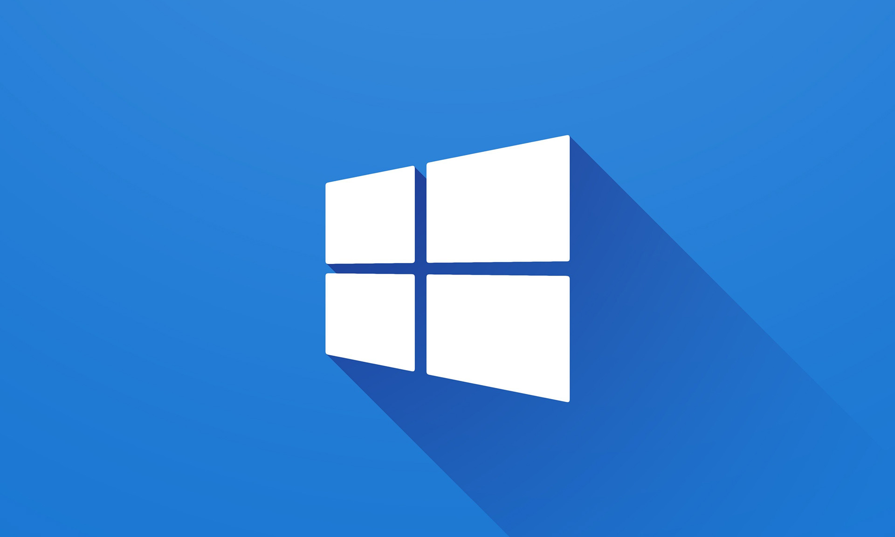
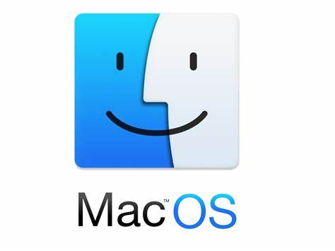
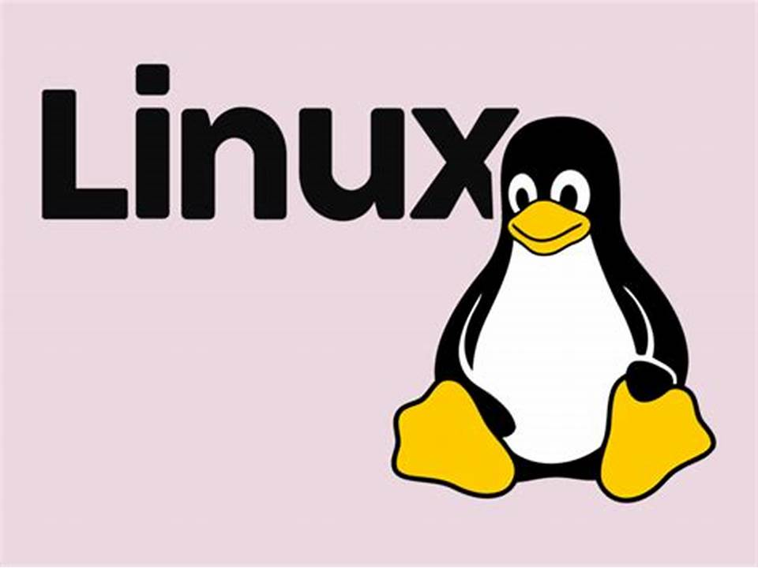
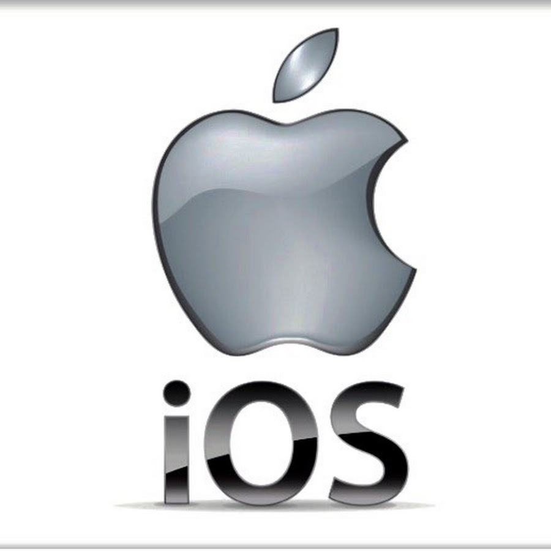

Operating System

An operating system (OS) is a software system that manages computer hardware and software resources and provides common services for computer programs. The operating system acts
as an intermediary between the hardware and software applications, allowing them to interact with each other in a controlled manner.
The operating system is responsible for a range of tasks, including managing the computer's memory, processing and scheduling tasks, managing input and output devices, and controlling network
connections. It also provides a user interface, which allows users to interact with the computer system and run applications.
There are several types of operating systems, including desktop operating systems such as Windows, macOS, and Linux, as well as mobile operating systems like Android and iOS. Each operating
system has its own unique features and functionality, but they all serve the same basic purpose of managing the computer's hardware and software resources.
Types of Operating System:
- Single-user, single-task - This type of operating system is designed to manage a single user and run one task at a time. Examples include older versions of MS-DOS.
- Single-user, multi-tasking - This type of operating system can run multiple programs at the same time, but is designed for use by a single user. Examples include Windows and macOS.
- Multi-user - A multi-user operating system can support multiple users accessing the same system simultaneously. Examples include UNIX and Linux.
- Real-time - A real-time operating system is designed to handle real-time applications such as industrial control systems, robotics, and other embedded systems. Examples include VxWorks and QNX.
- Network - A network operating system is designed to manage and coordinate resources and activities on a network, such as file sharing, printer sharing, and security. Examples include Windows Server and
Novell NetWare.
- Mobile - A mobile operating system is designed for mobile devices such as smartphones and tablets. Examples include Android and iOS.
- Embedded - An embedded operating system is designed to be used in embedded systems such as automobiles, appliances, and medical equipment. Examples include Embedded Linux and Windows Embedded.
Each type of operating system has its own unique features and functionality, depending on the needs of the user or the specific application it is designed for.
Examples of Operating System:
- Windows - A popular desktop operating system developed by Microsoft. It is widely used in personal computers and laptops. 
- macOS - The operating system used in Apple's desktop and laptop computers, which is designed to work seamlessly with other Apple devices. 
- Linux - An open-source operating system widely used in servers, supercomputers, and mobile devices, among others. There are many versions or "distributions" of Linux available, including Ubuntu, Fedora,
and Debian. 
- Android - A mobile operating system developed by Google, which is used in many smartphones and tablets.

- iOS - A mobile operating system developed by Apple, which is used in the iPhone and iPad. 
- Chrome OS - An operating system developed by Google, designed for use in Chromebook laptops and other devices.
- Unix - An operating system that has been in use since the 1970s, and is still used in some servers and high-performance computing environments.

These are just a few examples of the many operating systems in use today.
Here are some interesting facts about Operating System:
- The first operating system was developed in the 1950s for the UNIVAC I computer.
- One of the most widely used operating systems in the world is Linux, which was developed in 1991 by Linus Torvalds.
- The most widely used desktop operating system in the world is Windows, developed by Microsoft.
- The most widely used mobile operating system is Android, developed by Google.
- Operating systems are responsible for managing computer resources such as memory, storage, and CPU time, and for providing a user interface for users to interact with their devices.
- There are different types of operating systems, including single-user, multi-user, real-time, mobile, and embedded.
- Some operating systems are open-source, meaning that their source code is freely available for anyone to use, modify, and distribute.
- The first versions of Microsoft Windows, such as Windows 1.0 and 2.0, were not true operating systems, but rather graphical user interfaces (GUIs) that ran on top of MS-DOS.
- Some operating systems are designed to be highly secure and resistant to hacking, such as Qubes OS, which uses virtualization to isolate different parts of the operating system.
- Some of the most successful and innovative companies in the world, such as Microsoft, Apple, and Google, owe much of their success to the operating systems they have developed.
About
- If you want to learn more, you can search for it in your browser.
- The content of this site is not mine to take credit. I only get information on the internet.